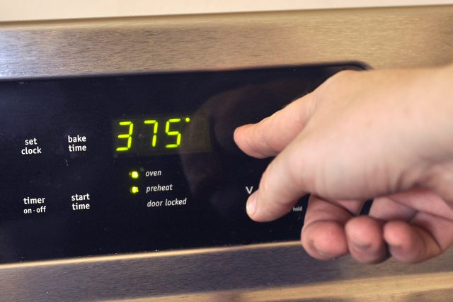
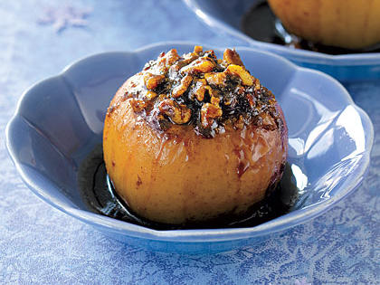

|
| First |
 |
Preheat oven to 375 degrees F. |
| Second |
|
Wash honeycrisp apples and core out center leaving enough room for filling. |
| Third |
|
Combine butter, pecans, brown sugar, oats and cinnamon in bowl. |
| Fourth |
|
Fill centers of each apple to the brim of the core. Lightly drizzle with Maple Syrup. |
| Fifth |
 |
Fill 2 quart baking dish with 3/4 cups of water. Place apples upright in dish and bake for 1 hour. |